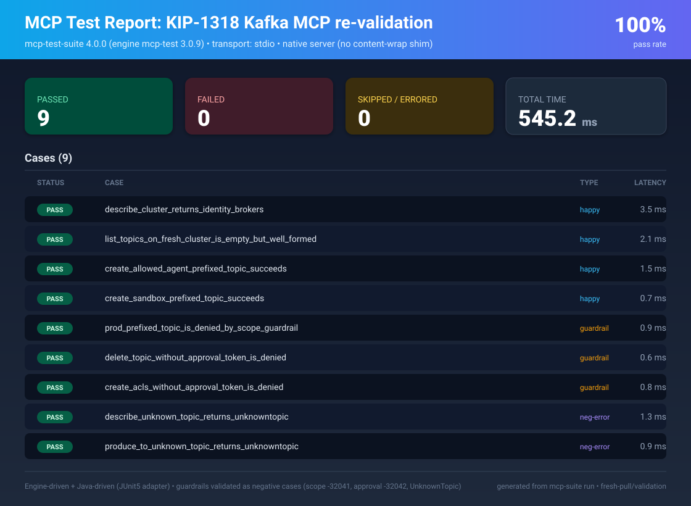

Kafka MCP Enterprise
A fail-closed MCP reference for agent workloads on Apache Kafka - KIP-1318, stdlib Python, install from PyPI.
Start the presentation KIP-1318 walkthrough - click to open the deckA fail-closed MCP reference for agent workloads on Apache Kafka - KIP-1318, stdlib Python, install from PyPI.
Start the presentation KIP-1318 walkthrough - click to open the deckEvery tools/call walks nine gates. The first denial wins. Broker ACLs stay authoritative.
CLI entrypoint: kafka-mcp-enterprise. Import: kafka_mcp.
pip install kafka-mcp-enterprise
echo {"jsonrpc":"2.0","id":1,"method":"tools/list"} | kafka-mcp-enterpriseGuardrails return the right error codes - not just "something failed."

Docs live in the repository. The site is packaging and orientation only.